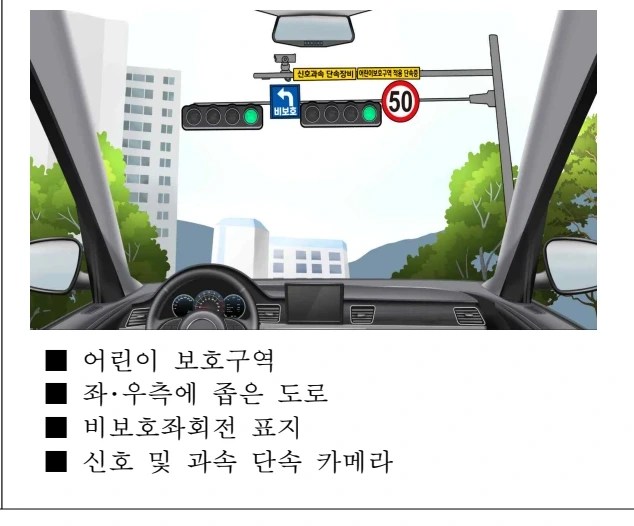

840. Замын хөдөлгөөний тухай хуулийн дагуу дараах замын хөдөлгөөний аюулгүй байдлын байгууламжийн талаар зөв тайлбар аль 2 вэ?

- ①Хурдны хязгаар цагт 50 км бөгөөд хэтрүүлсэн тохиолдолд хяналт шалгалтад өртөж болно.
- ②Урд талын гэрлэн дохио ногоон суман дохиотой үед л зүүн эргэж болно.
- ③Бүх хүүхдийн хамгаалалтын бүсийн хурдны хязгаар цагт 50 км байдаг.
- ④Гэрлэн дохионы дараалал нь улаан – шар – ногоон – ногоон суман дохио юм.
- ⑤Урд талын гэрлэн дохио ногоон байвал эсрэг урсгалд автомашин байхгүй үед зүүн эргэж болно.
Хариулт харах
Зөв хариулт
① Хурдны хязгаар цагт 50 км бөгөөд хэтрүүлсэн тохиолдолд хяналт шалгалтад өртөж болно.
⑤ Урд талын гэрлэн дохио ногоон байвал эсрэг урсгалд автомашин байхгүй үед зүүн эргэж болно.
Үндэслэл
Ажигласан хөдөлгөөний мэдээлэл нь дараагийн нөхцөлийг таамаглах үндэс. Хөдөлж буй зүйл хаашаа явах, зогссон зүйл хөдөлж эхлэх эсэхийг тооцно. Замын зарчим, зөв дадлыг хэрэгжүүлэх нь чухал. Давуу эрхгүй зүүн эргэхэд жолоочийн зөв шийдвэр онцгой хэрэгтэй: өөдөөс ирэх машин төсөөлснөөс хурдан байж болох тул тэднийг бүгдийг өнгөрүүлж, аюулгүй болсны дараа болгоомжтой эргэнэ. Зураг нь давуу эрхгүй болон тусгай дохиотой зүүн эргэлтийг хослуулсан тул чигээр явах ногоон дохиогоор ч, ногоон сумтай үед ч зүүн эргэж болно.
Үндэслэлийн текст нь машин орчуулга.